In VS Code, what must be done first is to create a new file next to your main "index.html" file and save it a "css" file. This will be called an External Stylesheet.
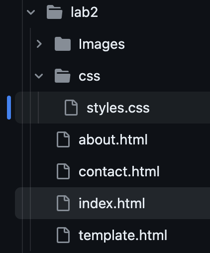After creating the CSS file, use a "link" element within the "head" tags. The Link element should include a "rel" and "href" attributes. The Rel attribute should have the "stylesheet" value next to it in order to link a style sheet to the HTML document. The "href" attribute should have the CSS filename included next to it to let the HTML document know where the CSS file is located. Below is an example of the Link element:
link rel="stylesheet" href="css/styles.css"
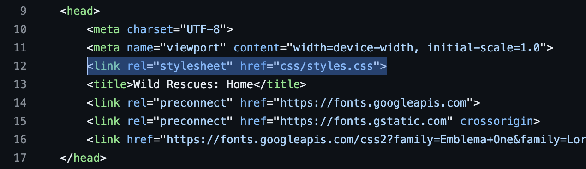In CSS, there are three types of style rules, also known as selectors:
HTML Element Name: Uses all the elements of the same name. For CSS, the name of the element is typed in without any characters.
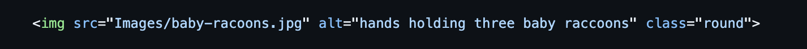 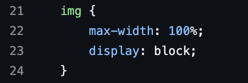ID Selector: Uses an id attribute to select a single element. In HTML, an id attribute is created by typing in id=" " next to a beginning element, such as a "div" or "main" element. You control an ID Selector in CSS by starting the style rule with a hashtag (#).
Class Selector: Selects elements ONLY if the have a specific attribute that starts with "class". In CSS, a Class Selector can be controled by starting the starting rule with a period (.).
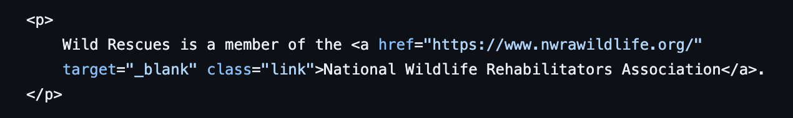 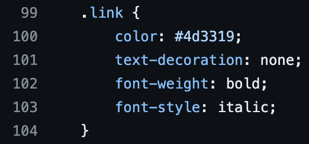The first style rule to create is called the CSS reset. This will be used to resolve webpage display inconsistencies, since what might be enabled or working in one web browser may not possible with another.
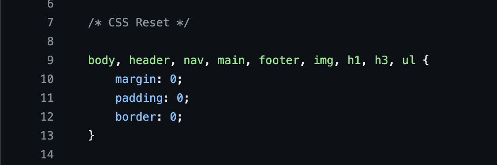Next, create style rules to indicate where logos, images, lists, and other elements will appear on the webpage. For example, you can use list-style properties on ordered/ unordered lists to change the design of the bullet points or numbers. For example, by using the list-style-type: property on the CSS file, you can enter in "square" to have the bullet points appear as squares instead of circles, or enter in "upper-roman" to have a numbered list appear as Roman Numerals.
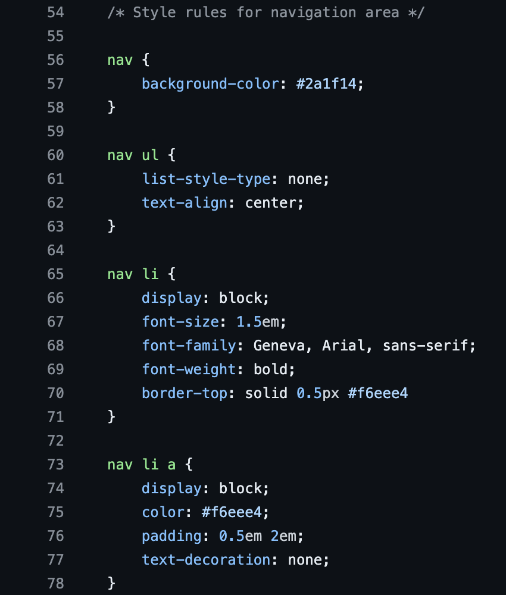 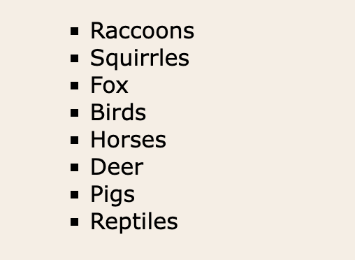Since style rules are not specific to what part of the webpage they fuinction, comments are used to help with that problem. By making the stylesheet easier to identify what purpose a group of style rules are for, web developers can easily modify or troubleshoot a webpage when the time is neccessary for the system to update. You place comments as follows:
/* Insert any comment you want here */
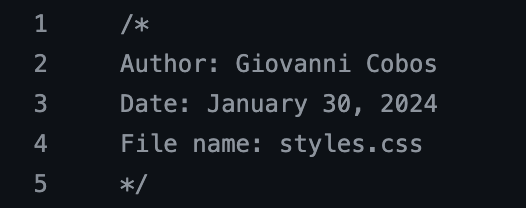Once the CSS stylesheet is completed, the final step is to validate it to make sure there are no syntax errors in the coding. The best website to validate CSS spreadsheets is the W3C Markup Validation Service.
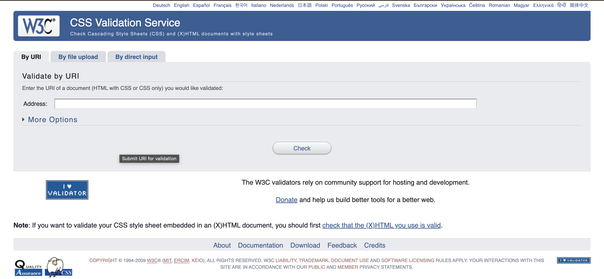If there are no errors in your CSS stylesheet, then the website will show you a green bar saying there is no error.
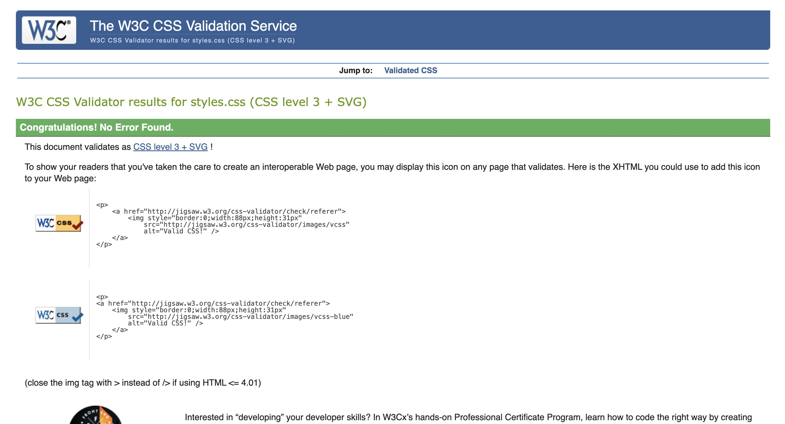However, if there is more than 1 error, the website will show you a red bar along with a location and description of the error or errors.
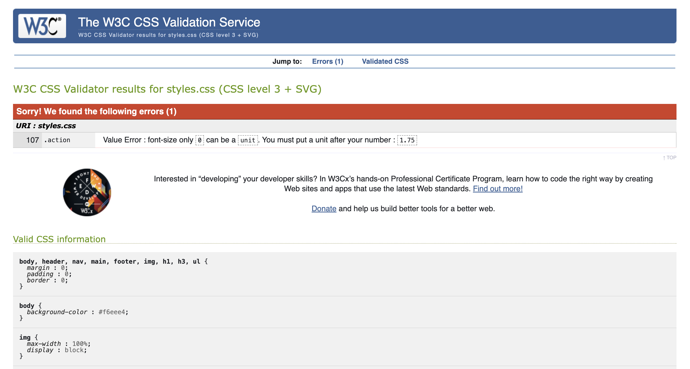